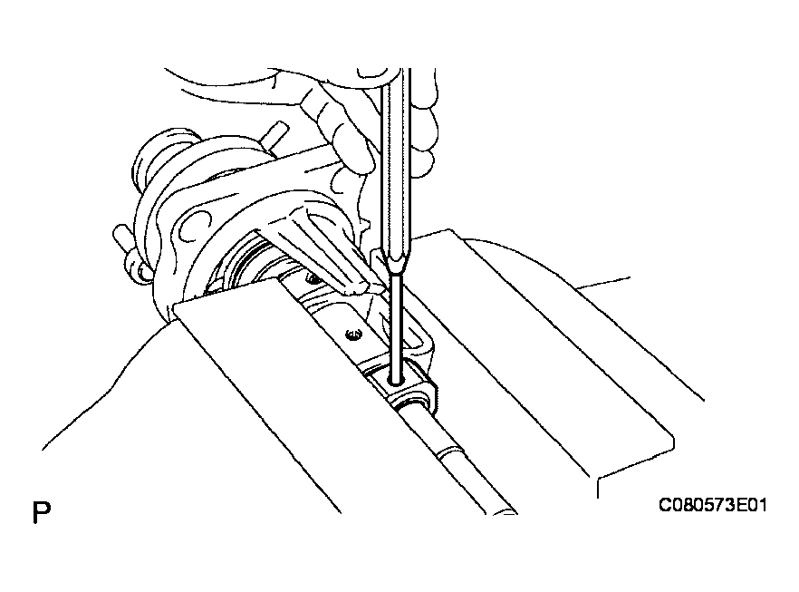
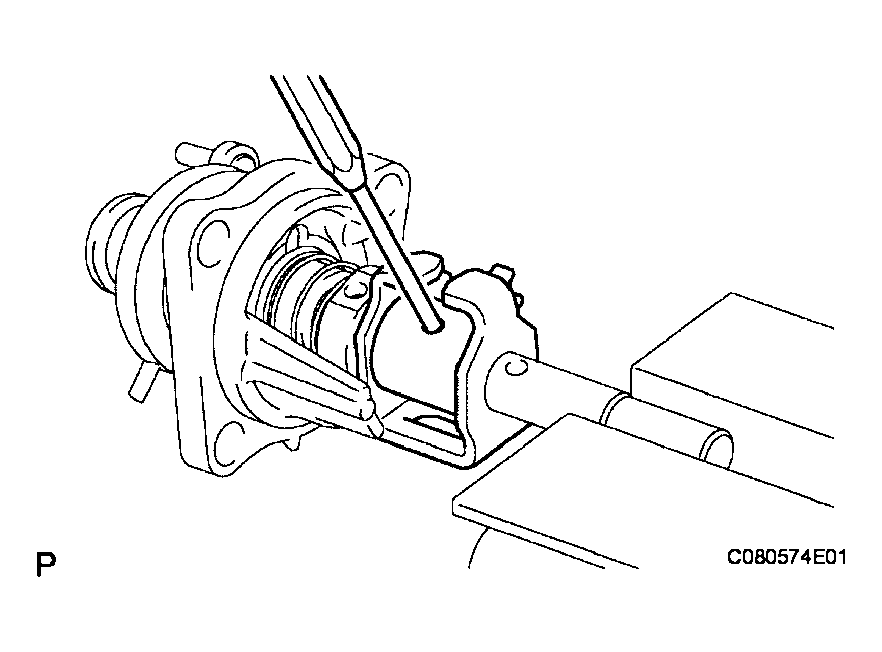
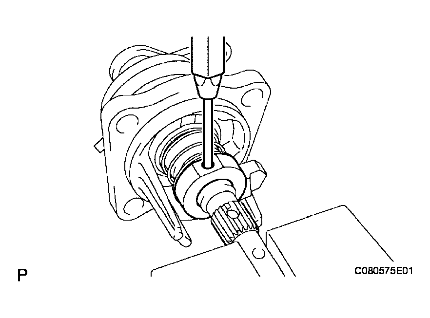
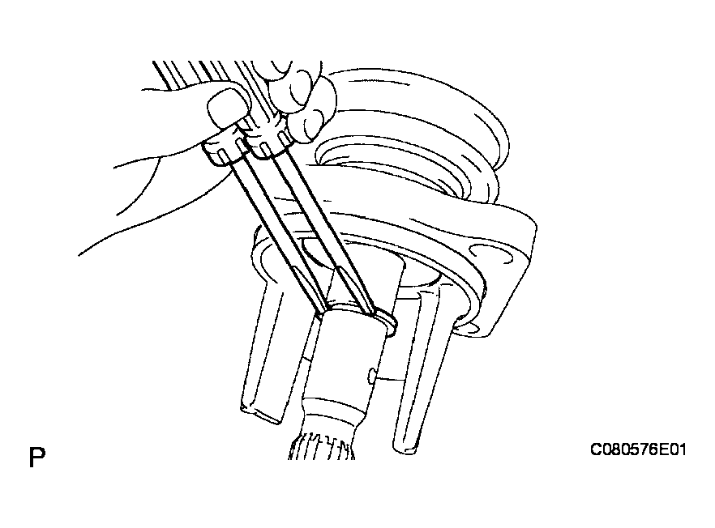

Shift And Select Lever Shaft: Disassembly
- REMOVE SHIFT AND SELECT LEVER BUSH
- Remove the bush from the selecting bellcrank.
- REMOVE NO. 1 SELECTING BELLCRANK DUST COVER
- Remove the dust cover from the selecting bellcrank.
- REMOVE NO. 2 SELECTING BELLCRANK
- Remove the nut, wave washer and No. 2 selecting bellcrank plate washer.
- Remove the No. 2 selecting bellcrank from the selecting bellcrank support.
- REMOVE NO. 2 SELECTING BELLCRANK DUST COVER
- Remove the dust cover from the selecting bellcrank support.
- REMOVE NO. 2 SELECTING BELLCRANK BUSH
- Remove the 2 bushes from the No. 2 selecting bellcrank.
- REMOVE NO. 2 SELECT SPRING SEAT
- Using a screwdriver, pry out the seat E-ring, No. 2 select spring seat and No. 2 select return compression spring from the shift and select lever shaft.
- REMOVE NO. 2 SHIFT LEVER INNER
- Using a 5 mm pin punch and hammer, tap out the shift inner lever slotted spring pin and No. 2 shift lever inner from the shift and select lever shaft.Fig 8: Tapping Shift Inner Lever Slotted Spring Pin And Shift Lever Inner From Shift And Select Lever Shaft

Courtesy of © TOYOTA, LICENSE AGREEMENT TMS1002HINT:
Make sure of the orientation of the No. 2 shift lever inner.
- Using a 5 mm pin punch and hammer, tap out the shift inner lever slotted spring pin and No. 2 shift lever inner from the shift and select lever shaft.
- REMOVE NO. 1 SHIFT LEVER INNER
- Using a 5 mm pin punch and hammer, tap out the shift inner lever slotted spring pin, No. 1 shift lever inner and shift interlock plate from the shift and select lever shaft.

Courtesy of © TOYOTA, LICENSE AGREEMENT TMS1002HINT:
Make sure of the orientation of the No. 1 shift lever inner.
- Using a 5 mm pin punch and hammer, tap out the shift inner lever slotted spring pin, No. 1 shift lever inner and shift interlock plate from the shift and select lever shaft.
- REMOVE SELECT INNER LEVER
- Using a 5 mm pin punch and hammer, tap out the select inner lever slotted spring pin, select inner lever, No. 1 select return compression spring and No. 1 select spring seat from the shift and select lever shaft.

Courtesy of © TOYOTA, LICENSE AGREEMENT TMS1002HINT:
Make sure of the orientation of the select inner lever.
- Using a 5 mm pin punch and hammer, tap out the select inner lever slotted spring pin, select inner lever, No. 1 select return compression spring and No. 1 select spring seat from the shift and select lever shaft.
- REMOVE CONTROL SHAFT COVER
- Using 2 screwdrivers and hammer, tap out the No. 1 select spring seat shaft snap ring.

Courtesy of © TOYOTA, LICENSE AGREEMENT TMS1002HINT:
Use a cloth to prevent the shaft snap ring from springing away.
- Remove the control shaft cover, control shift lever retainer gasket and shift and select lever shaft dust boot from the shift and select lever shaft.
- Using 2 screwdrivers and hammer, tap out the No. 1 select spring seat shaft snap ring.
- REMOVE CONTROL SHAFT COVER OIL SEAL
- Using a screwdriver, pry out the oil seal from the control shaft cover.